RUBEZH STRAZH · установка · 2.8
Установка в Яндекс Браузер
Пошаговая инструкция основана на ваших снимках. Красные рамки, стрелки и номера добавлены для пояснения. На некоторых снимках показана ранняя rc-версия: номер на вашем компьютере может отличаться, ориентируйтесь на скачанный релиз. Снимки обезличены; исходные фото не входят в инструкцию.
Можно открыть ту же инструкцию как страницу с крупными картинками: src/install.html. Руководство по ежедневной работе находится отдельно: src/help.html.
Уже установлено? Перейдите к инструкции по работе с пропусками.
1. Подготовьте компьютер
Нужен Windows-компьютер с Яндекс Браузером, установленными SMART iDesigner и драйвером IDP SMART-51. Принтер должен определяться в Windows. Прежде чем работать через расширение, убедитесь, что ваш принтер работает из iDesigner с профилем hYMCKO. Расширение не устанавливает драйвер, не прошивает принтер и не исправляет неисправную ленту.
Дождитесь окончания всех заданий: принтер должен быть готов и неподвижен. Если на дисплее ошибка, сначала обратитесь к ответственному за принтер. Не запускайте установку моста во время печати.
2. Скачайте готовый архив релиза
- Откройте страницу проекта и справа найдите Releases.
- Нажмите релиз с отметкой Latest.
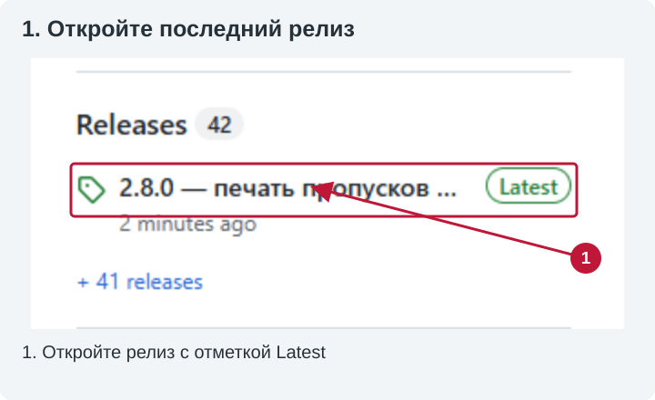
- В разделе Assets нажмите файл вида
rubezh-strazh-extension-unpacked-v2.8.0.zip. Для более новой версии номер в имени будет другой. - Не скачивайте Source code (zip/tar.gz) для обычной установки: это исходники, не готовый комплект.
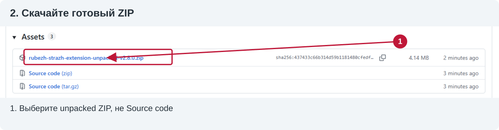
3. Найдите ZIP и полностью распакуйте его
- Дождитесь завершения загрузки. В загрузках браузера нажмите «Открыть папку».
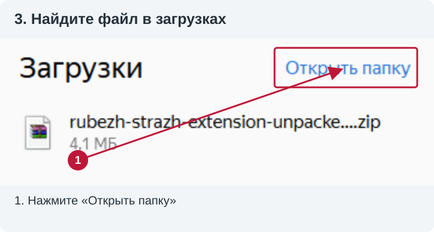
- В Проводнике щёлкните правой кнопкой по ZIP → «Извлечь файлы…» (на снимке WinRAR) или «Извлечь всё» (средство Windows).
- Выберите постоянную папку, например
Документы\RubezhPrinter, и распакуйте архив целиком. Содержимое архива нельзя запускать прямо из окна ZIP.
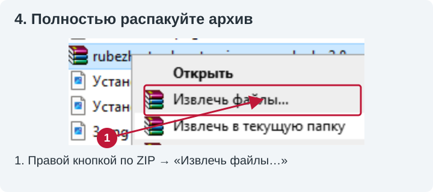
- Откройте папку
rubezh-strazh-extension-unpacked. Непосредственно в ней должны лежатьmanifest.json, папкиsrcиbridge,README.md,INSTALL-RU.txt. - Если внутри есть ещё одна одноимённая папка, откройте её: нужен уровень с
manifest.json. Не выбирайте папкуsrcилиbridgeвместо корня расширения. - Не удаляйте и не перемещайте эту папку после подключения: браузер читает файлы из неё. Снимки показывают «Загрузки», но постоянная отдельная папка удобнее, чем очищаемая папка загрузок.
4. Установите локальный Print Bridge
- В распакованном комплекте откройте папку bridge.
- При готовом неподвижном принтере дважды щёлкните install.cmd. Это установщик. Не запускайте вместо него
install.ps1,RubezhPrintBridge.ps1или.cs-файлы.
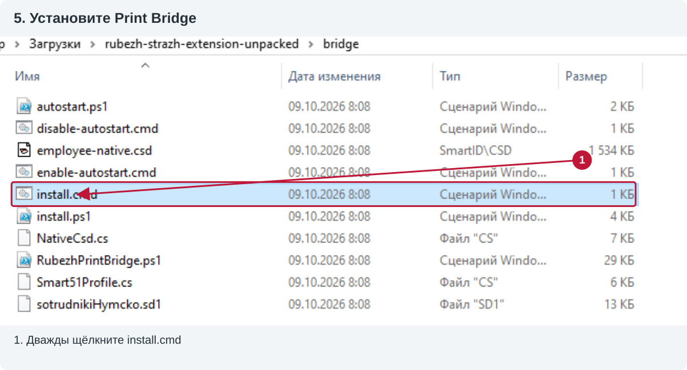
- Дождитесь сообщения RUBEZH Print Bridge installed and started successfully. и Installation completed.
- Когда установщик пишет «Для продолжения нажмите любую клавишу…», нажмите любую клавишу и закройте это окно. Постоянно держать его открытым не требуется.
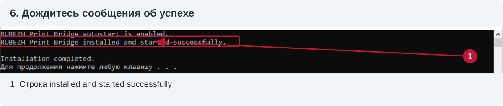
Установщик копирует мост и SDK из установленного iDesigner в %LOCALAPPDATA%\RubezhPrintBridge, запускает мост и включает автозапуск при входе в Windows. При обновлении он останавливает старый мост — поэтому установка запрещена во время движения принтера.
Если показано SmartComm2.dll was not found, установите/проверьте SMART iDesigner. Не скачивайте DLL со случайных сайтов. Если запуск ограничен политикой рабочего компьютера, обратитесь к администратору; не отключайте защиту ради установки.
5. Подключите распакованное расширение
- В адресную строку Яндекс Браузера вставьте
browser://extensionsи нажмите Enter. - В правом верхнем углу включите «Режим разработчика».
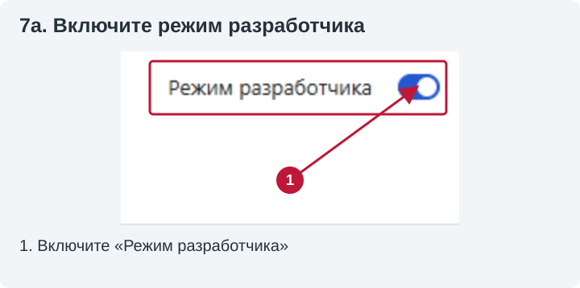
- Нажмите «Загрузить распакованное расширение» слева сверху. Не «Упаковать расширение» и не «Обновить».
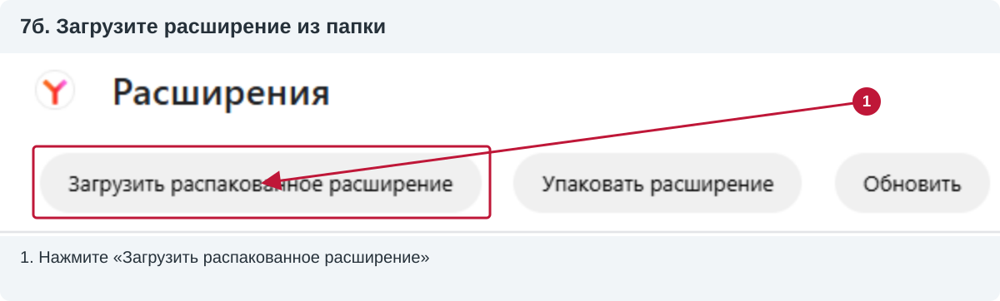
- В окне выбора папки откройте rubezh-strazh-extension-unpacked и нажмите «Выбор папки».
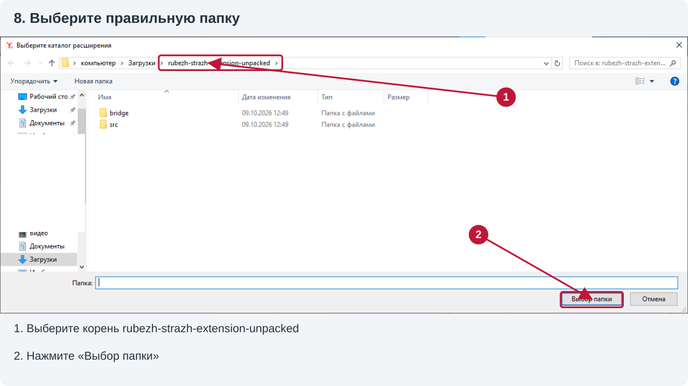
В этом диалоге показываются папки, поэтому manifest.json может быть не виден — это нормально. Его наличие проверяют обычным Проводником. Если браузер сообщает, что manifest отсутствует, выбран неверный уровень папки или архив распакован не полностью.
- Найдите карточку RUBEZH STRAZH — печать пропусков. Убедитесь, что переключатель включён и нет ошибки загрузки.
- На снимке ниже ранняя версия
2.8.0-rc.6; для релиза 2.8.0 должна быть версия 2.8.0. Проверяйте установленную копию, а не номер в иллюстрации.
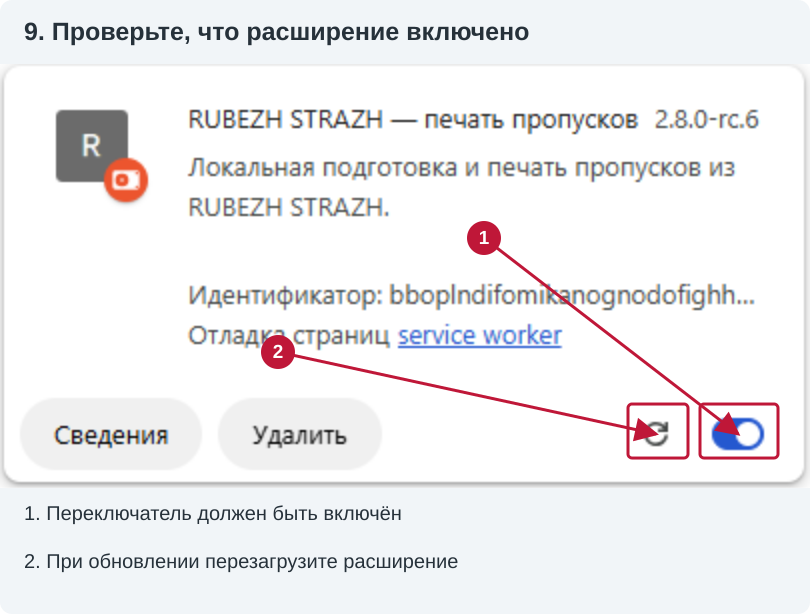
6. Укажите адрес сервера и обновите RUBEZH
- Откройте значок расширения возле адресной строки → «Настройки». Если значок скрыт, найдите его в меню расширений и при желании закрепите.
- В поле «Адрес RUBEZH» укажите фактический адрес вашего сервера: протокол, имя/IP и порт, если есть. Например,
http://10.250.225.16— только пример со снимков, не адрес для всех установок. Не добавляйте путь страницы человека. - Нажмите «Сохранить». Дождитесь сообщения «Настройки сохранены. Обновите страницу RUBEZH».
- Вернитесь в RUBEZH, войдите обычным способом, откройте карточку человека и нажмите Ctrl+R. Рядом с кнопкой сохранения должны появиться С / М / В.
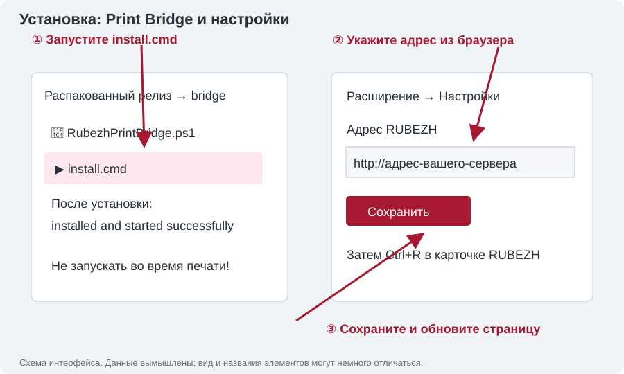
Эта последняя иллюстрация — схема настроек, а остальные — обработанные снимки вашего интерфейса. Пароль RUBEZH в расширение не вводится. Рабочий порядок после установки: значок расширения → «Инструкция» или src/help.html.
7. Проверьте связь без печати
Откройте http://127.0.0.1:18451/health в браузере. Для 2.8.0 ответ должен содержать ok: true, имя выбранного принтера и protocolVersion: 9. Это только проверка связи, карточка не печатается. Если адрес не открывается — мост недоступен; если протокол другой — используется старый мост.
Мост по умолчанию выбирает первый найденный подходящий принтер SDK. Если принтеров несколько, ответ health поможет проверить выбор. Для явного выбора запишите точное описание нужного устройства, возвращаемое SDK, в файл %LOCALAPPDATA%\RubezhPrintBridge\printer.txt. Не подставляйте произвольное название очереди Windows: описание должно соответствовать устройству SDK в вашей системе. Не делайте контрольную печать на неизвестном устройстве.
8. Как обновлять комплект
- Дождитесь готовности и остановки принтера.
- Полностью распакуйте новую версию в постоянную папку. Не смешивайте отдельные файлы разных версий.
- Запустите bridge\install.cmd из нового комплекта. Для 2.8.0 нужны расширение и мост с протоколом 9; версия rc.8 использовала тот же протокол.
- Если путь папки прежний, нажмите круговую стрелку перезагрузки на карточке расширения (вторая отметка на снимке шага 5). Если путь изменился, подключите новую папку и отключите старую копию.
- Обновите открытые вкладки RUBEZH (Ctrl+R), сохраните правильный адрес сервера в настройках и проверьте health.
Не перезагружайте расширение и не переустанавливайте мост, пока задание выполняется.
9. Если установка не удалась
- Нет кнопок С/М/В: откройте карточку, не общий список; проверьте включение расширения и адрес сервера, нажмите Ctrl+R.
- Нет manifest / не удалось загрузить: распакуйте архив целиком и выбирайте папку с
manifest.json, не ZIP и неsrc/bridge. - Мост недоступен: при простаивающем принтере проверьте установку моста и health; сохраните текст ошибки. Не перезапускайте его во время печати.
- Профиль драйвера отличается / печать не подтверждена: не обходите проверку повторной печатью, передайте лог ответственному за принтер.
- Где лог: Win+R →
%LOCALAPPDATA%\RubezhPrintBridge→ bridge.log. Передайте свежий файл, время попытки, сообщение/фото дисплея; не используйте старую копию из папки проекта. - Автозапуск: отключается
bridge\disable-autostart.cmd, включаетсяbridge\enable-autostart.cmd. Отключение применяется при следующем входе в Windows и само по себе не останавливает текущий процесс.